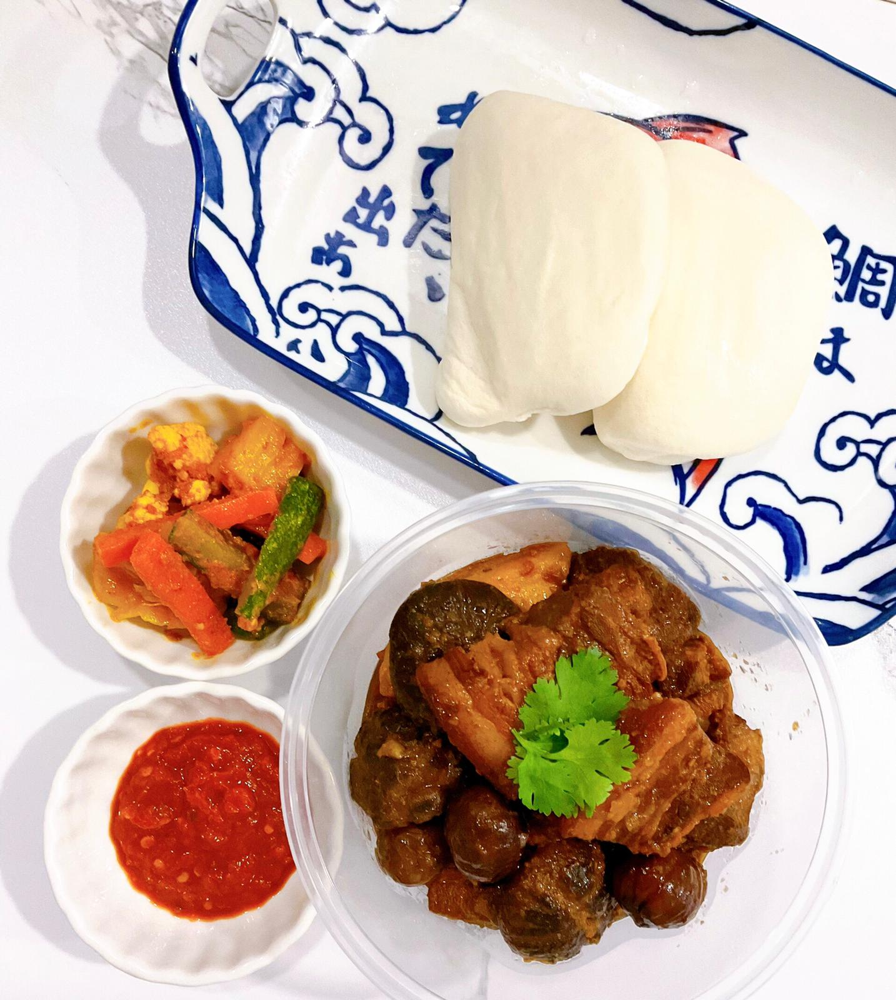

Babi Pongteh

Description
Babi pongteh is a much loved and traditional Peranakan dish containing tender cuts of pork stewed in a sweet and savoury fermented soy bean sauce.
Included in this dish are also potatoes, mushrooms and chestnuts soaking up all that delicious gravy. Yummy!
Ingredients
- Pork belly
- Pork shoulder
- Potatoes
- Mushroom
- Chestnut
- Shallots
- Garlic
- Fermented soya bean paste
- Brown sugar
- Dark soya sauce
- Cinnamon Stick
Steps
- Blend shallots and garlic together into a fine paste.
- Sear pork belly and pork shoulder over high heat to give it a charred flavor
- Cook garlic and shallot paste over low heat till it becomes aromatic. Remove from heat
- Caramelise sugar over low heat till it turns into a syrup. Add in pork and shallot paste in and fry.
- Add dark soya sauce, fermented soya bean paste and cinnamon stick and mushroom and cook over a pressure cooker for about 30 min or till soft.
- Just before serving, add in precooked potatoes and chestnut and serve with a garnish of coriander.